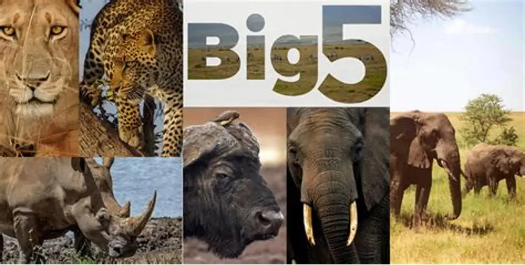

| ANIMAL'S NAME | CHARACTERISTICS | MOSTLY FOUND | FEEDING SYSTEM | TYPES |
|---|---|---|---|---|
| LION | The lion is a well-muscled cat with a long body, large head, and short legs. Size and appearance vary considerably between the sexes. The male’s outstanding characteristic is his mane, which varies between different individuals and populations. | Historically, they ranged across much of Europe, Asia, and Africa, but now they are found mainly in parts of Africa south of the Sahara. | Hunting and Feeding Behavior Lions primarily hunt medium- to large-sized hoofed animals, such as wildebeests, zebras, and antelopes. While they are formidable hunters, they are also opportunistic scavengers that will consume carrion or steal kills from other predators like hyenas and cheetahs. |
|
| LEOPARD | Size: Leopards typically weigh 50 to 90 kg (110 to 200 pounds) and reach shoulder heights of 60 to 70 cm. Coat:Their ground color is generally yellowish above and white below. They are distinguished by rosettes—circular markings without a central spot—which differ from the solid spots of a cheetah or the central-spotted rosettes of a jaguar. Variations: A black color variant is commonly known as a black panther. | found in several regions across Africa and Asia. While they have lost a significant portion of their historical range, they currently persist in large pockets throughout sub-Saharan Africa, Iran, and the Himalayas | Leopards are opportunistic carnivores with a flexible feeding system that allows them to thrive in various environments. Their diet primarily consists of medium-sized ungulates, but they will also consume a wide range of prey | African Leopard (P. p. pardus) — Widespread across sub‑Saharan Africa , Indian Leopard (P. p. fusca) — Indian subcontinent, Myanmar, southern Tibet , Sri Lankan Leopard (P. p. kotiya) — Endemic to Sri Lanka , Persian Leopard (P. p. saxicolor / tulliana) — Iran, Caucasus, Turkmenistan , Javan Leopard (P. p. melas) — Island of Java, Indonesia , Amur Leopard (P. p. orientalis) — Russian Far East and northern China , Indochinese Leopard (P. p. delacouri) — Mainland Southeast Asia and southern China , North Chinese Leopard (P. p. japonensis) — Northern China , . Arabian Leopard (P. p. nimr) — Arabian Peninsula (Oman, Yemen) |
| ELEPHANT | Elephants are the world’s largest land animals, distinguished by their long trunk, tusks, large ears, thick wrinkled skin, and highly developed social and cognitive abilities. They exhibit complex communication, live in matriarchal family groups, and can weigh up to 7 tons depending on species. | Elephants are primarily found in sub-Saharan Africa and parts of South and Southeast Asia, with species-specific preferences for savannas, forests, and grasslands. | Elephants are herbivores, consuming a wide range of vegetation: Grasses (especially during the wet season) Leaves, twigs, and bark Roots and fruits Tree branches, often broken using strength and trunk control African savanna elephants in Tanzania typically shift diet seasonally: more grass in rainy months and more woody plants in dry months. | African savanna elephant African forest elephant Asian elephant |
| RHINOCEROS | Rhinoceroses are large, thick‑skinned herbivores distinguished by one or two keratin horns, massive bodies weighing up to 3–5 tons, and gray‑brown nearly hairless skin with folds in some species. | Rhinoceroses are usually found in eastern and southern Africa and in subtropical and tropical Asia, including countries such as South Africa, Kenya, Namibia, India, Nepal, Indonesia, Sumatra, and Borneo. | All rhinoceros species are strict herbivores, but their diets differ depending on species and habitat: White rhino – primarily grazers; they feed on short grasses. Black rhino – browsers; they eat leaves, twigs, shrubs, and branches. Indian, Javan, and Sumatran rhinos – mixed feeders; they consume leaves, fruits, bark, and shrubs in forested environments. | There are five living rhinoceros species: White, Black, Greater One‑Horned (Indian), Javan, and Sumatran rhinos. These species are split between Africa (White and Black) and Asia (Greater One‑Horned, Javan, Sumatran), each with distinct sizes, habitats, and conservation statuses. |
| AFRICAN BUFFALO | African buffalo (Syncerus caffer) are large, heavily built bovines weighing roughly 300–900 kg, standing about 1.0–1.7 m tall, and distinguished by their massive curved horns—especially the fused horn “boss” in mature males. | Eastern & Southern Africa (Primary Range) — These regions hold the largest and most stable buffalo populations, including Tanzania, Zambia, Zimbabwe, Angola, and South Africa . The Cape buffalo subspecies dominates here, with major herds in places such as the Serengeti, Maasai Mara, Kruger, Okavango Delta, and Chobe . West & Central Africa (Fragmented Populations) — Smaller, more scattered populations occur in countries like Senegal, Cameroon, Chad, the Democratic Republic of Congo, and Guinea, including forest buffalo in rainforest zones General Sub‑Saharan Range — Historically widespread across most of sub‑Saharan Africa, but now reduced and fragmented due to habitat loss, hunting, and disease | African buffalo are ruminants that feed mainly on grass and roughage . Their wide muzzle and mobile tongue allow them to crop large quantities of tall, fibrous grasses efficiently biologyinsights.com . They are bulk grazers, meaning they consume large volumes of vegetation rather than selectively picking plant species | African buffalo (Syncerus caffer) are usually divided into two broad categories based on ecology and morphology: Cape (Savanna) Buffalo — the large, dark, heavy‑built buffalo common across East and Southern Africa. Forest Buffalo — the smaller, reddish buffalo found in Central and West African rainforests. |